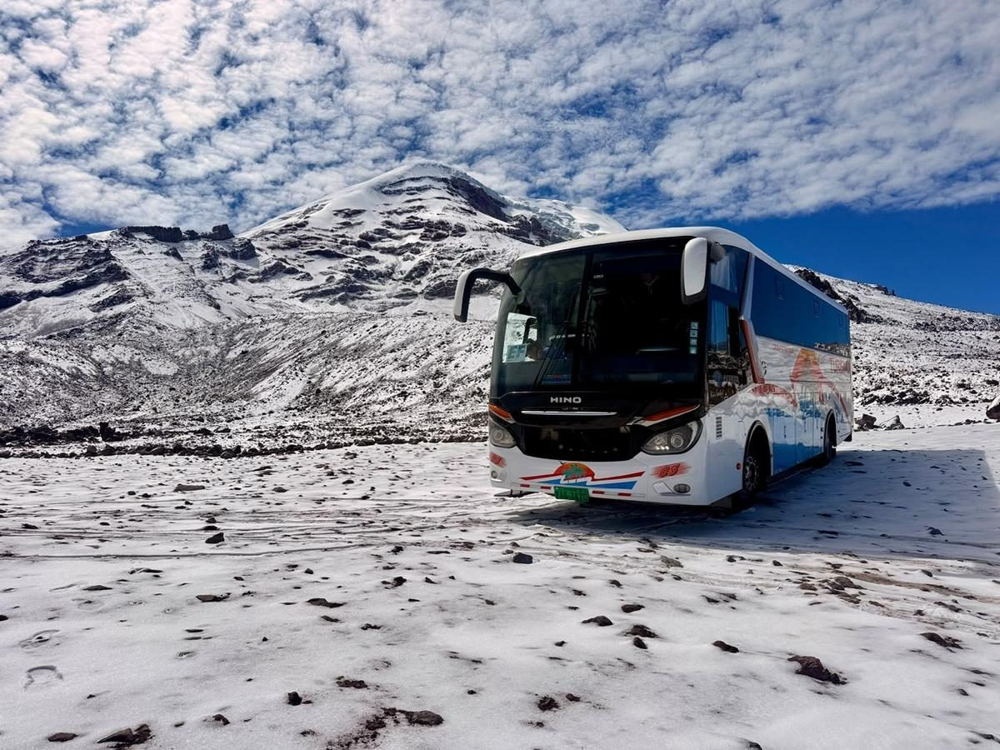
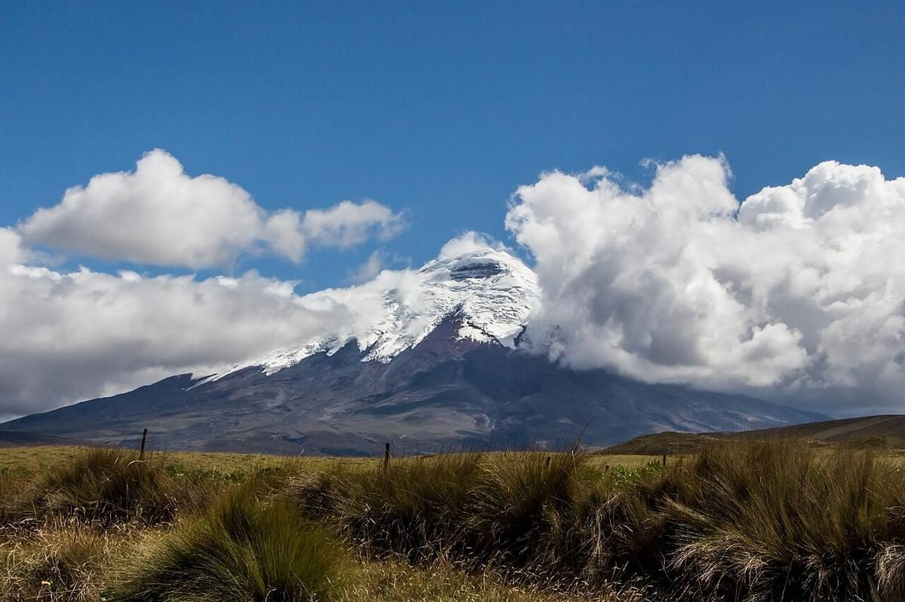
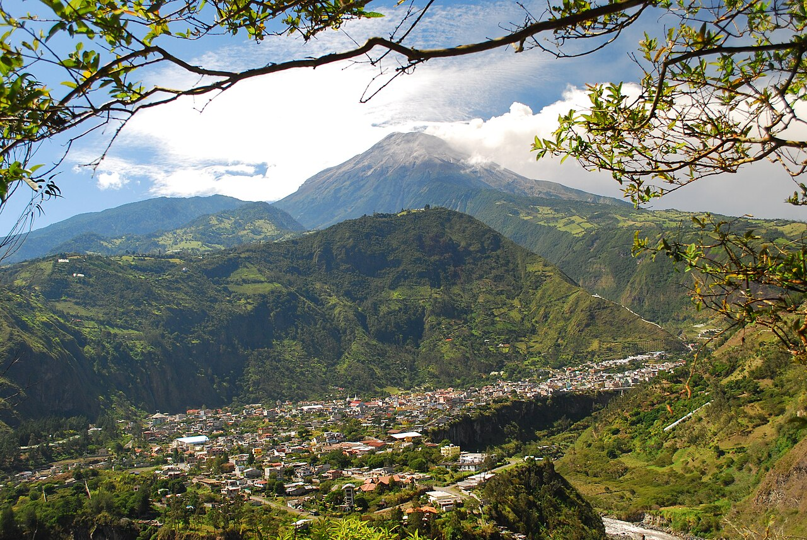
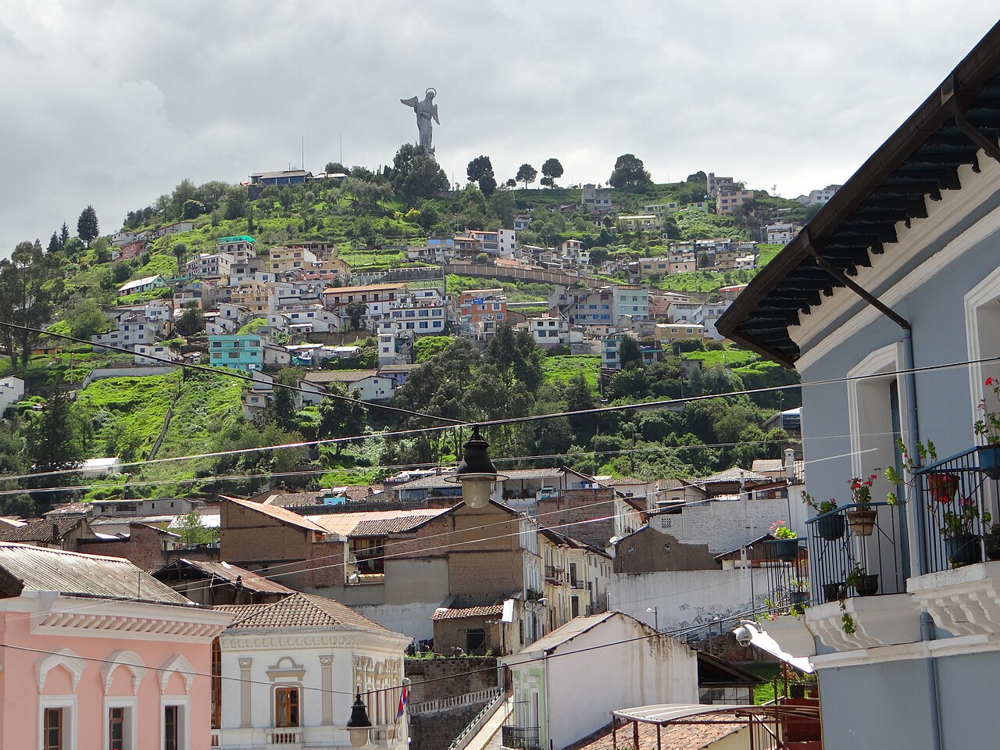

Salidas y paseos
Indica origen, destino y fecha para consultar un recorrido y el transporte disponible.
Ecuador · Viajes en grupo
Cuéntanos de dónde salen, a dónde quieren ir y cuántos viajan. Consulta una propuesta de transporte para tu grupo.
Disponibilidad, vehículo, tarifa y condiciones se confirman con el operador antes de reservar.

Un plan para tu grupo
Indica origen, destino y fecha para consultar un recorrido y el transporte disponible.
Incluye cuántas personas viajan y si necesitan ida, regreso o varias paradas.
Confirma precio total, horarios, capacidad, equipaje, servicios incluidos y condiciones antes de aceptar.
Ideas para tu recorrido
Referencias para planificar. Las rutas y fechas se consultan; no son salidas programadas.



Solicita una propuesta
Completa los datos, revisa el borrador y ábrelo en WhatsApp. Tú decides cuándo enviarlo.
Este sitio no cobra ni confirma reservas. La respuesta y las condiciones se acuerdan directamente con SG-Turismo.
No incluyas documentos ni información sensible. Los campos se procesan en esta página; al abrir WhatsApp el borrador se comparte con ese servicio.
Aún no se ha enviado ni reservado nada.